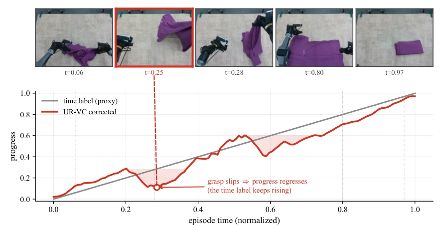
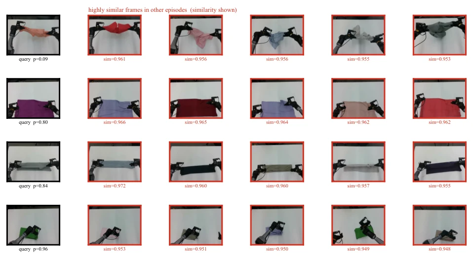
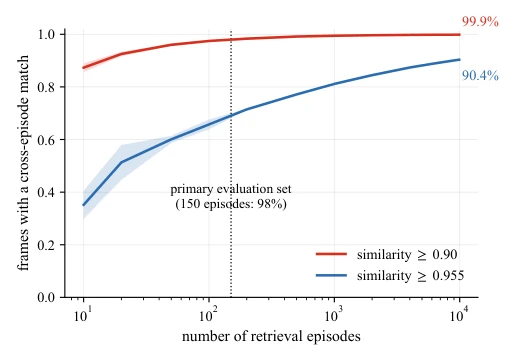
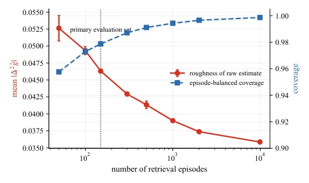

UR-VC: Unsupervised Robotic Value Correction for Time-Derived Progress Proxies
Lirui Zhao, Modi Shi, Li Chen, Qi Liu, Ping Luo, Hongyang Li abspdf
论文点评Review
这篇论文干了一件看似简单却直击痛点的事：把“时间”和“进度”分开。现在 VLA 模型训练动不动就依赖 dense value 信号，但真值哪来？大家习惯用归一化时间当代理，但这玩意儿在接触式操作里简直是个瞎子，滑倒、回退全看不见。UR-VC 没搞复杂的价值模型预训练，而是玩起了“找茬”游戏：既然不同集里状态会重复，那就把相似帧的时间标签平均一下，强行把单调的时间曲线掰弯。这招“无训练修正”确实省了算力，但代价是依赖数据冗余。如果机器人每次操作都独一无二，这方法就歇菜了。不过看在实机成功率提升 6% 的份上，这“数据清洗”的性价比还是很高的，就是别指望它能解决所有语义歧义。
This paper undertakes a task that appears simple yet directly addresses a critical pain point: decoupling 'time' from 'progress'. Currently, VLA model training frequently relies on dense value signals, yet where does the ground truth originate? The common practice is to use normalized time as a proxy, but this approach is effectively blind in contact-rich operations, failing to detect slips or regressions. UR-VC avoids complex value model pre-training, instead employing a 'spot-the-difference' strategy: since states repeat across different episodes, it averages the time labels of similar frames, forcibly bending the monotonic time curve. This 'training-free correction' indeed saves computational resources, but at the cost of relying on data redundancy. If every robot operation is unique, this method becomes ineffective. However, considering the 6% improvement in real-world success rate, the cost-effectiveness of this 'data cleaning' remains high, though one should not expect it to resolve all semantic ambiguities.
Modern robot learning systems, particularly VLA models [5, 15, 4, 3], increasingly rely on value signals from intermediate states to guide policy learning or detect task completion. However, obtaining dense progress ground truth is difficult in large-scale datasets. The current common alternative is normalized time, assuming progress increases with time [1, 25]. Yet this poses a significant pitfall in contact-rich and deformable object manipulation: robots may experience physical progress regression due to grasp slippage or wrinkle unfolding, while time labels continue to increase linearly. This mismatch causes advantage signal degradation, rendering it unable to distinguish actions that genuinely improve states from ineffective ones. Existing works attempt to learn progress estimators via contrastive learning [23, 18] or language-image goals [19, 2], or extract value using pre-trained models [20, 7]. However, the issue lies in that if the supervision target itself is a time proxy with systematic bias, the learned estimator tends to inherit this bias, smoothing out local regressions. Therefore, the authors propose correcting the proxy labels themselves prior to training any estimator.

Fig. 1: Time is not progress. In a real cloth flatten-and-fold episode, the garment is first smoothed, but a slipping grasp reintroduces wrinkles and causes physical progress to regress. The time-derived label (gray) remains monotone by construction, whereas UR-VC estimates corrected progress by retrieving semantically similar frames from other episodes and aggregating their time-derived labels, producing a correction (red) that decreases when the visual state worsens. Across the primary evaluation set, 13.4% of frames receive a negative horizon advantage under UR-VC, capturing regressions the time proxy misses.
The core logic of UR-VC utilizes cross-episode state redundancy to correct time bias. The overall workflow is divided into three steps: first, visual feature extraction, using SigLIP-2 [26] to compute L2 normalized embeddings for each frame; second, cross-episode retrieval and aggregation, where for a query frame i, semantic similar frames j are sought in other episodes, requiring similarity greater than ρ and time difference within τ range. The key innovation lies in the "Episode-Balanced" strategy: each episode contributes only one best-matching frame to prevent adjacent frames within the same trajectory from having excessive weight, then averaging the time labels of these matching frames yields the corrected progress ĝ_i; finally, advantage label generation, calculating the difference within a fixed horizon H based on the corrected progress r̂_i = ĝ_{i+H} - ĝ_i, marking the top 20% as positive advantage samples for VLA training. This method is entirely offline and training-free, requiring no additional value model, completing label correction solely through matrix operations, transforming originally monotonic time signals into progress signals that reflect local regressions.

Fig. 3: Cross-episode retrieval captures folding state across garment appearances. For query frames at successive fold stages (left, black borders), nearest neighbors retrieved from other episodes (red borders, similarity shown) exhibit the same folding state across different garment colors.
Experiments are based on a real-world two-finger cloth flattening-folding task, with the dataset containing 150 main evaluation sets, extended to a 10^4 scale to test scalability. Evaluation metrics encompass cross-episode coverage, semantic consistency, non-monotonic recovery capability, and downstream VLA training performance. Results indicate that at the 150-episode scale, 98% of frames find similar neighbors (similarity ≥ 0.90), and the corrected labels capture 13.4% of negative advantage frames (i.e., physical progress regression). Downstream VLA training (based on the π_0.5 backbone [3]) across 6 different tablecloth conditions saw average success rates improve from 72.8% to 78.9%, with 5 conditions performing better. Ablation analysis demonstrates that as the retrieval set size increases, the roughness of the corrected estimation decreases, and coverage approaches 100%, proving the method is practical under medium-scale data without requiring changes to model architecture or training objectives.

Fig. 2: Cross-episode matches are abundant. Fraction of task-region frames with at least one semantically similar neighbor in a different episode as more retrieval episodes are added. On real flatten-fold demonstrations, the 150-episode primary evaluation set already covers 98% of frames at simi- larity ≥0.90, indicating that independently collected episodes provide sufficient anchors for correcting time-derived progress labels. Coverage further improves at the 104-episode scale, reaching 99.9% at ≥0.90 and 90.4% at ≥0.955.

Fig. 4: The correction improves with more retrieval episodes. Episode-balanced UR-VC across retrieval-set sizes, reported as mean ± std over random subsets. The roughness of the corrected progress estimate, measured by mean |∆2ˆgt|, decreases by roughly one third from 50 episodes to the 104- episode scale. Meanwhile, coverage remains high and rises from 96% to 99.9%, showing that larger retrieval sets provide both denser support and more stable correction. The 150- episode primary evaluation set already lies in a usable regime.